SQL Server 2019 brings innovative security and compliance features, industry leading performance, mission-critical availability, and advanced analytics to all data workloads, now with support for big data built-in.
SQL Server 2019 is a hub for data integration. Data virtualization allows queries across relational and non-relational data without movement or replication. The enhanced PolyBase feature of SQL Server 2019 is able to connect to Hadoop clusters, Oracle, Teradata, MongoDB, and more.
Customers will be able to deliver transformational insights over structured and unstructured data with the power of SQL Server, Hadoop and Spark. SQL Server 2019 big data clusters offer scalable compute and storage composed of SQL Server, Spark and HDFS. Big data clusters will also cache data in scale-out data marts.
SQL Server 2019 is a complete AI platform to train and operationalize R and Python models in SQL Server Machine Learning Services or Spark ML using Azure Data Studio notebooks.
SQL Server 2019 will give customers and ISVs the choice of programming language and platform. They will be able to build modern applications with innovative features using .NET, PHP, Node.JS, Java, Python, Ruby, and more – and deploy the application on either Windows, Linux, or containers both on-premises and in the cloud. Application developers are now able to run Java code on SQL Server and store and analyze graph data.
SQL Server 2019 allows customers to run real-time analytics on operational data using HTAP (Hybrid Transactional and Analytical Processing), leverage the in-memory technologies for faster transactions and analytical queries, and get higher concurrency and scale through persistent memory.
Intelligent Query Processing features in SQL Server 2019 improve scaling of queries, and Automatic Plan Correction resolves performance problems.
SQL Server 2019 enables several layers of security including protection of computations in Always Encrypted secure enclaves. Customers can track compliance with sophisticated tools such as Data Discovery & Classification labeling for GDPR and Vulnerability Assessment tool.
For High Availability and Disaster Recovery, SQL Server 2019 now supports up to eight secondary replicas in an Always On Availability Group. Customers can also run Always On Availability Groups on containers using Kubernetes.
SQL Server 2019 also has powerful tools for Business Intelligence including Analysis Services and Power BI Report Server which provide visual data exploration and interactive analysis of business data.
Scenario overview
Contoso Auto stores data in several data stores, including relational databases, NoSQL databases, data warehouses, and unstructured data stored in a data lake. They have heard of data virtualization in SQL Server 2019, and are interested to see whether this feature will allow them to more easily access their data stored in these disparate locations. They have heard of the new Big Data Clusters that can be scaled out to handle their Big Data workloads, including machine learning tasks and advanced analytics. They are also interested in any performance improvements against their internal SQL tables by moving to 2019, since the overall amount of data is growing at a rapid pace.
This experience will highlight the new features of SQL Server 2019 with a focus on Big Data Clusters and data virtualization. You will gain hands-on experience with querying both structured and unstructured data in a unified way using T-SQL. This capability will be illustrated by joining different data sets, such as product stock data in flat CSV files in Azure Storage, product reviews stored in Azure SQL Database, and transactional data in SQL Server 2019 for exploratory data analysis within Azure Data Studio. This joined data will be prepared into a table used for reporting, highlighting query performance against this table due to intelligent query processing. With the inclusion of Apache Spark packaged with Big Data Clusters, it is now possible to use Spark to train machine learning models over data lakes and use those models in SQL Server in one system. You will learn how to use Azure Data Studio to work with Jupyter notebooks to train a simple model that can predict vehicle battery lifetime, score new data and save the result as an external table. Finally, you will experience the data security and compliance features provided by SQL Server 2019 by using the Data Discovery & Classification tool in SSMS to identify tables and columns with PII and GDPR-related compliance issues, then address the issues by layering on dynamic data masking to identified columns.
SQL Server 2019 login credentials provided for your lab environment
Azure SQL Database login credentials provided for your lab environment
Before the lab: Connecting to SQL Server 2019
Follow the steps below to connect to your SQL Server 2019 cluster with both Azure Data Studio and SQL Server Management Studio (SSMS).
Connect with Azure Data Studio
On the bottom-left corner of your Windows desktop, locate the search box next to the Start Menu. Type Azure Data Studio, then select the Azure Data Studio desktop app in the search results.
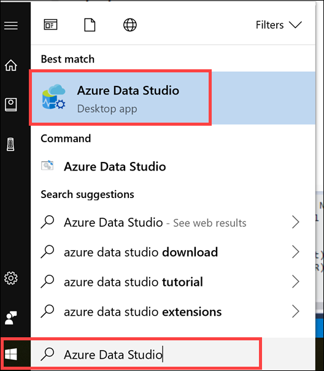The search box has “Azure Data Studio” entered into it and the desktop app is highlighted in the results.
Within Azure Data Studio, select Servers from the top of the left-hand menu, then select New Connection from the top toolbar to the right of the menu.
The Servers menu icon is selected, as well as the new connection icon.
Within the Connection dialog, configure the following:
Connection type: Select Microsoft SQL Server.
Server: Enter the IP address, followed by port number 31433. For example: 123.123.123.123,31433.
Username: Enter “sa”.
Password: Enter the password provided to you for this lab.
Remember password: Checked.
Leave all other options at their default values.
The Connection form is filled out with the previously mentioned settings entered into the appropriate fields.
Click Connect.
Connect with SQL Server Management Studio
On the bottom-left corner of your Windows desktop, locate the search box next to the Start Menu. Type SQL Server Management Studio, then select the SQL Server Management Studio desktop app in the search results.
The search box has “SQL Server Management Studio” entered into it and the desktop app is highlighted in the results.
Within the Connection dialog that appears, configure the following:
Server name: Enter the IP address, followed by port number 31433. For example: 123.123.123.123,31433.
Login: Enter “sa”.
Password: Enter the password provided to you for this lab.
Remember password: Checked.
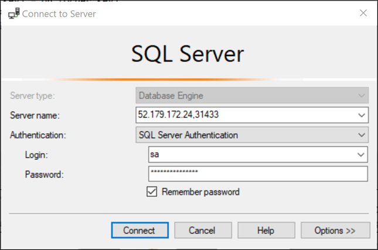The Connect form is filled out with the previously mentioned settings entered into the appropriate fields.
Click Options >>.
Select the Additional Connection Parameters tab. In the text area below, enter TrustServerCertificate=True. This is needed because the server certificates are dynamically generated for the Big Data Clusters, and are self-signed.
The Additional Connection Parameters tab is selected and the TrustServerCertificate=True value is highlighted.
Click Connect.
Task 1: Query and join data from flat files, data from external database systems, and SQL Server
One of the key new features of SQL Server 2019 is data virtualization. What this means is that you can virtualize external data in a SQL Server instance, regardless of source, location, and format, so that it can be queried like any other table, or sets of tables, within your SQL Server instance. In essence, data virtualization helps you create a single “virtual” layer of data from these disparate sources, providing unified data services to support multiple applications and users. A more familiar term we could use is data lake, or perhaps data hub. Unlike a typical data lake, however, you do not have to move data out from where it lives, yet you can still query that data through a consistent interface. This is a huge advantage over traditional ETL (extract-transform-load) processes where data must be moved from its original source to a new destination, oftentimes with some data transformation or mapping. This causes delays, extra storage, additional security, and a fair amount of engineering in most cases. With data virtualization, no data movement is required, which means the data sets are up-to-date, and it is possible to query and join these different data sources through these new capabilities, thanks to the use of new PolyBase connectors. The data sources you can connect to include Cosmos DB, SQL Server (including Azure SQL Database), Oracle, HDFS (for flat files), and DB2.
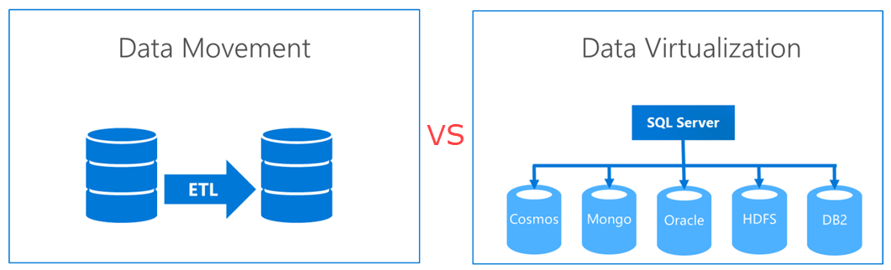Data Virtualization compared to traditional ETL.
The image to the left represents traditional data movement using ETL. Compare that to data virtualization, which does not require data movement and provides a unified layer over top of existing data sources.
In this task, you will experience how to configure data virtualization in SQL Server 2019 by joining data in a single query from a SQL Server 2019 table, an external file stored in HDFS (Hadoop Filesystem), and an external database.
To start, we will use the External Table Wizard in Azure Data Studio to connect to an external Azure SQL Database.
Open Azure Data Studio and connect to your SQL Server 2019 cluster, following the connection steps above.
Expand the Databases folder, right-click on the sales_YOUR_UNIQUE_IDENTIFIER database, then select Create External Table. The YOUR_UNIQUE_IDENTIFIER portion of the name is the unique identifier assigned to you for this lab.
The sales database and the Create External Table sub-menu item are highlighted.
Select the SQL Server data source type, then click Next.
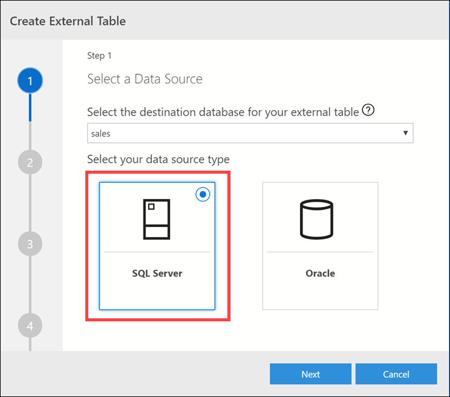The SQL Server data source type is selected.
The next step is to create a database master key, if it does not already exist. This secures the credentials used by an external data source. Enter MySecure@MasterKey1 in the Password and Confirm Password fields. If you see a message stating that a master key already exists, you may skip this step. Click Next.
The Master Key step is displayed.
Now, enter the credentials provided to you for the CA_Commerce Azure SQL Database within the following fields:
External Data Source Name: Enter “SQLReviews”.
Server Name: Enter the value provided to you for the Azure SQL Server name. The name should end with .database.windows.net.
Database Name: Enter “CA_Commerce”.
Choose Credential: Select “– Create New Credential –”.
Username: Enter the Azure SQL Server username provided to you for this lab.
Password: Enter the Azure SQL Server password provided to you for this lab.
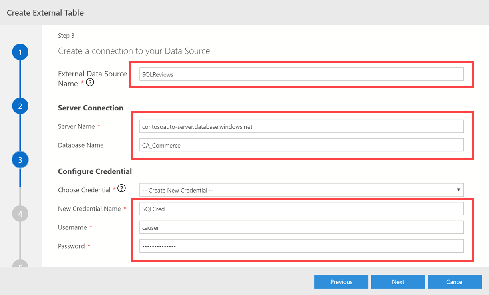The external data source connection form is filled out with the previously mentioned settings entered into the appropriate fields.
Click Next. This process will take a few moments while the External Table Wizard attempts to connect to your data source.
The next screen allows you to configure external table mapping and select the tables for which you want to create external views. Expand the CA_Commerce database node, then expand Tables, and check the box next to the dbo.Reviews table. Click on the table name to highlight it as well. It is here where you can rename the external table if you wish. For now, just click Next.
The external tables are listed and the Reviews table is checked and selected.
In the Summary page that follows, you can see the name of the database scoped credential and external data source objects to be created in the destination database. Here you can click Generate Script to view the SQL script that will run to create the external table. Instead, click Create.
A screenshot of the summary is displayed.
After a few moments, a “Create External Table succeeded” message will display.
The Create External Table succeeded message is displayed.
Select the Servers link (Ctrl+G) on the left-hand menu, then expand the Tables list underneath your sales_YOUR_UNIQUE_IDENTIFIER database and find the dbo.Reviews (External) table. If you do not see it, right-click on the Tables folder, then select Refresh. The “(External)” portion of the table name denotes that it is a virtual data object that was added as an external table.
The Reviews external table is displayed in the sales tables list.
Right-click the dbo.Reviews (External) table, then select the Select Top 1000 menu option to display the table contents.
The Select Top 1000 rows menu item is highlighted.
You should see a SQL query selecting the top 1000 records from the Reviews table and its results. The interesting thing to note is that the query selects the table and fields using the same syntax you would use to select from any other table in the sales database. The fact that the Reviews table is external is completely seamless and transparent to the user. This is the power of data virtualization in SQL Server 2019.
The next data source we will be virtualizing is a CSV file that was uploaded to HDFS.
Within Azure Data Studio, scroll down below the list of SQL Server 2019 databases to find the Data Services folder. Expand that folder, expand the HDFS folder, then expand the data subfolder. Right-click on the stockitemholdings.csv file, then select Create External Table From CSV Files.
The CSV file and the Create External Table From CSV Files menu item are highlighted.
The first dialog has you select the SQL Server Master instance containing your Big Data Cluster. Select the connection underneath Active SQL Server connections that includes the cluster’s IP address and the sales_YOUR_UNIQUE_IDENTIFIER database name.
The active SQL Server connection is highlighted.
Click Next.
In the destination database step, select the sales_YOUR_UNIQUE_IDENTIFIER database underneath Database the external table will be created in. Leave the name and schema at their defaults, then click Next.
The sales database is selected and highlighted.
The next step displays a preview of the first 50 rows CSV data for validation. Click Next to continue.
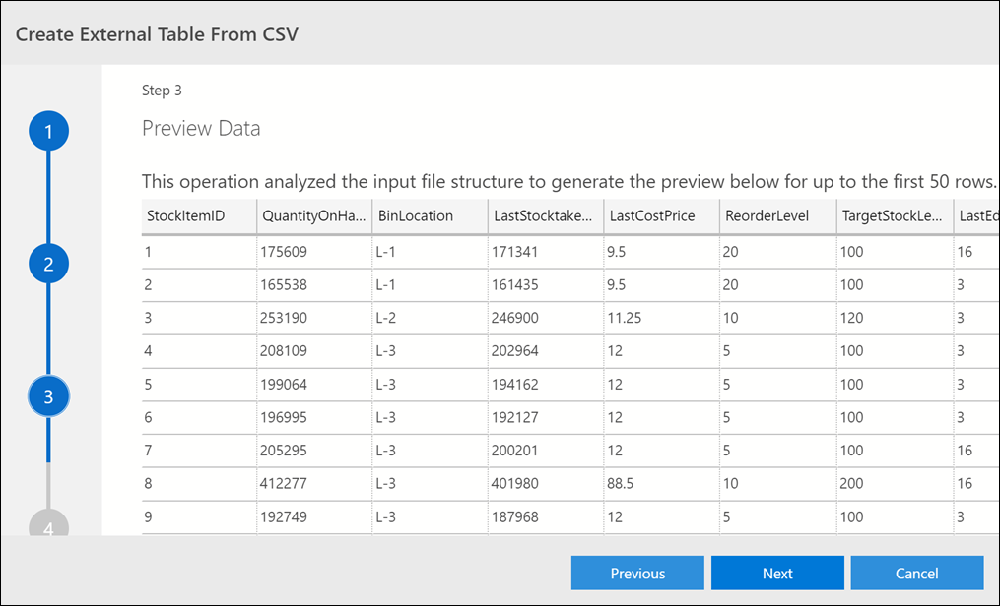A preview of the CSV data is displayed.
In the next step, you will be able to Modify the columns of the external table you intend to create. you are able to alter the column name, Change the data type, and allow for Nullable rows. Leave everything as-is and click Next.
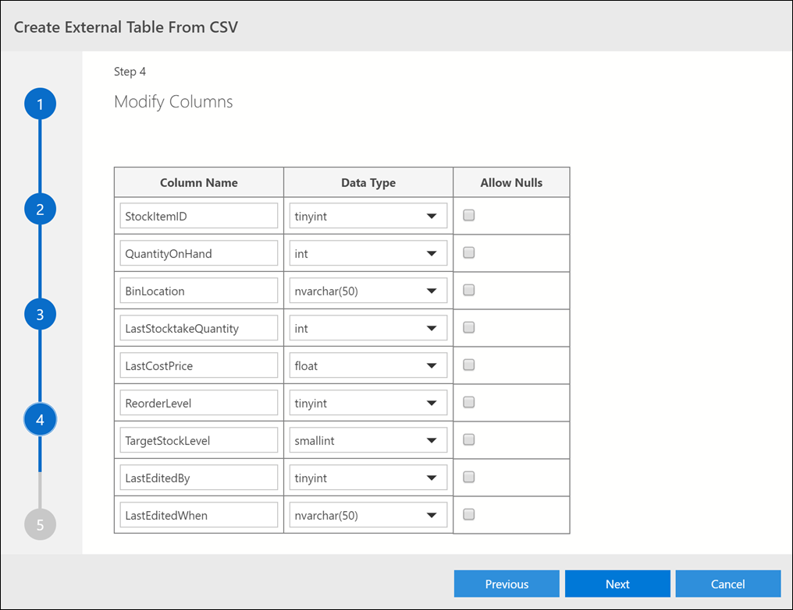The Modify Columns step is displayed.
Verify that everything looks correct in the Summary step, then click Create Table.
The Summary step is displayed.
As with the previous external table you created, a “Create External Table succeeded” dialog will appear under your task history in a few moments. Select the Servers link (Ctrl+G) on the left-hand menu, then expand the Tables list underneath your sales database and find the dbo.stockitemholdings (External) table. If you do not see it, right-click on the Tables folder, then select Refresh. Right-click the dbo.stockitemholdings (External) table, then select Select Top 1000 from the context menu.
The Select Top 1000 rows menu item is highlighted.
Just as before, you should see a SQL query selecting the top 1000 rows and its query results, this time from the stockitemholdings table. Again, the SQL query is the same type of query you would write to select from a table internal to the sales database.
The stockitemholdings query and results are displayed.
Now that we have our two external tables added, we will now join those two external tables and two internal tables with a new SQL query to demonstrate how you can seamlessly combine all these data sources without having to copy any files or with separate queries or additional processing of that data. Right-click the sales_YOUR_UNIQUE_IDENTIFIER database, then select New Query.
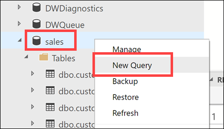The sales database and New Query menu item are highlighted.
Click the Run button above the query window to execute.
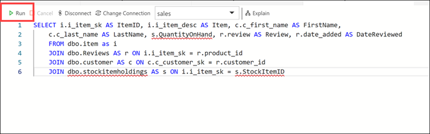The Run button above the query window is highlighted.
At the bottom of the query window, you will see results that include columns from the four data sources.
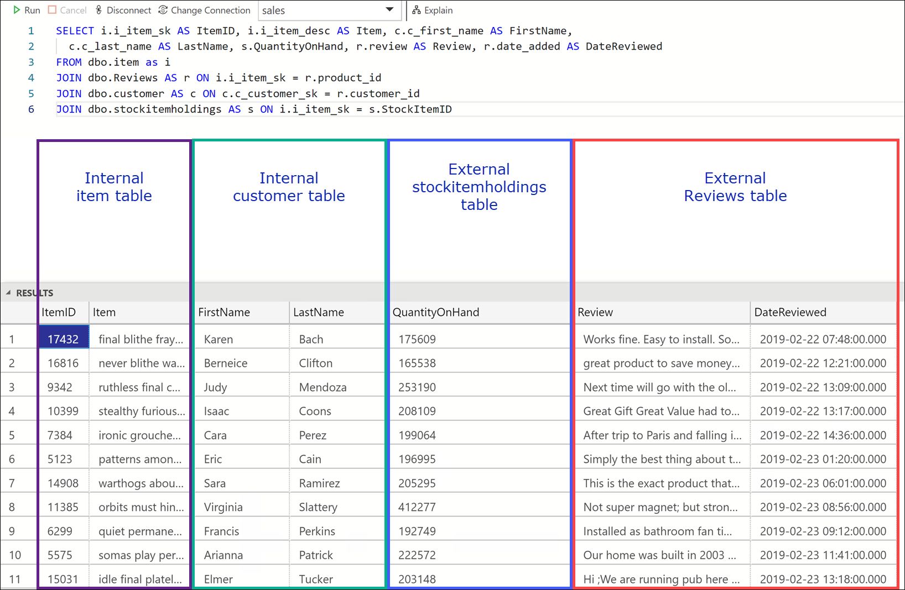Query results from the four data sets.
Task 2: Train a machine learning model, score and save data as external table
In this task, you will use Azure Data Studio to execute a notebook that will enable you to train a model to predict the battery lifetime, apply the model to make batch predictions against a set of vehicle telemetry and save the scored telemetry to an external table that you can query using SQL.
Open Azure Data Studio and select Servers.
Right click your Big Data Cluster node select Manage.
Manage cluster
In the window, select the SQL Big Data Cluster tab and then select the Open Notebook tile.
Open notebook
Browse to C:-files\1, select predict-battery-life-with-sqlbdc.ipynb and select Open.
Follow the instructions in the notebook and return to the next step after you have completed the notebook.
In Azure Data Studio, under Servers, expand your Big Data Cluster, Data Services, HDFS, data.
Right click the data folder and select Refresh to see the newly created folder.
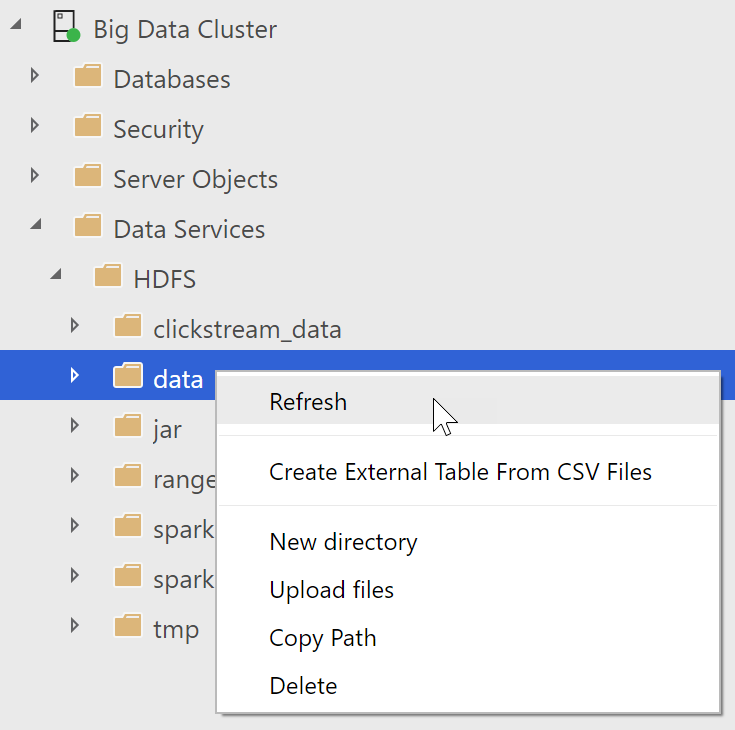Refresh data
You should see battery-life-YOUR_UNIQUE_IDENTIFIER.csv as a folder (where YOUR_UNIQUE_IDENTIFIER is your assigned identifier), expand it and then right click on the CSV file whose name starts with part-00000- and select Create External Table From CSV Files.
Create External Table
In Step 1 of the wizard, select your Active SQL Server connection to connect to your Big Data Cluster endpoint and select Next.
Select endpoint
In Step 2, select the sales_YOUR_UNIQUE_IDENTIFIER database and for the Name for new external table field provide battery-life-predictions. Select Next.
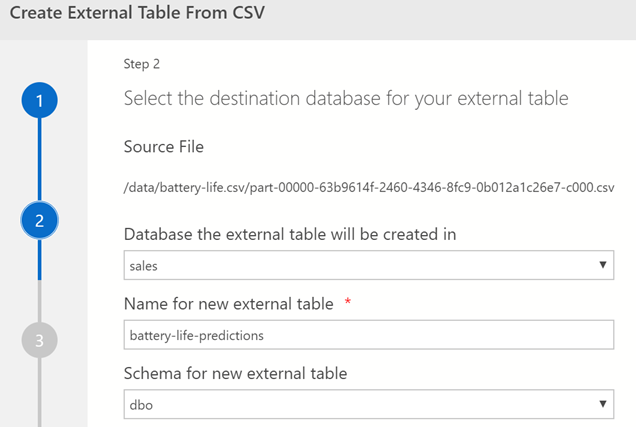Step 2
On Step 3, select Next.
On Step 4, for the column Car_Has_EcoStart set the Data Type to char(10). Select Next.
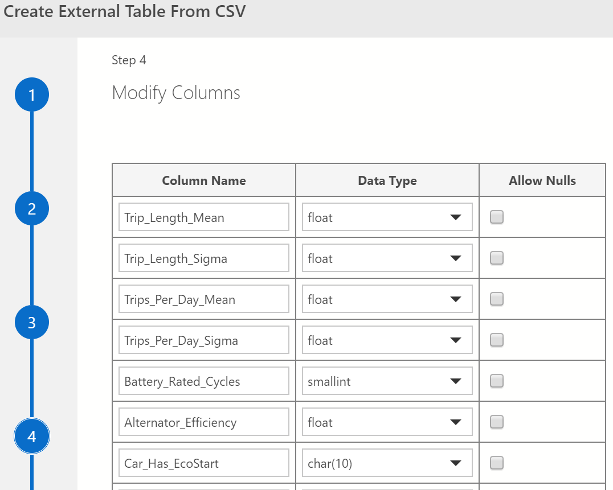Step 4
On Step 5, select Create Table. Your predictions are now available for SQL querying in the battery-life-predictions table in the sales database.
In Azure Data Studio, Servers, expand your Big Data Cluster, Databases, sales, right click Tables and then select Refresh.
Refresh sales
Expand tables, right click battery-life-prediction and select query to view the data contained by the external table.
Select Top 1000
The vehicle telemetry along with predictions will appear. These are queried from the external table which is sourced from the CSV you created using the notebook.
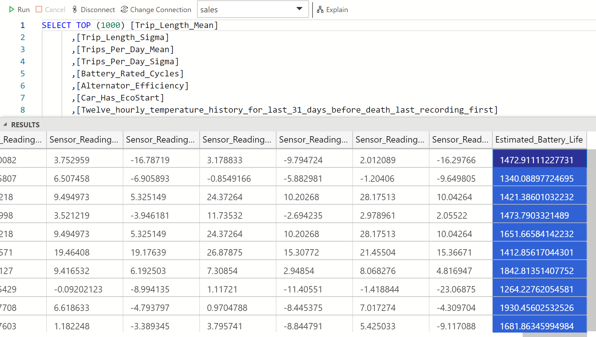View data
Task 3: Query performance improvements with intelligent query processing
In this task, you will execute a series of SQL scripts in SQL Server Management Studio (SSMS) to explore the improvements to family of intelligent query processing (QP) features in SQL Server 2019. These features improve the performance of existing workloads with minimal work on your part to implement. The key to enabling these features in SQL Server 2019 is to set the database compatibility level to 150. You will be executing these queries against the ContosoAutoDW database.
The first query you will run uses a user-defined function (UDF) that we have created for you, named customer_category. This UDF contains several steps to identify the discount price category for each customer. Notice that the top of the query we ran to create this UDF sets the database compatibility level to 150, which is the new compatibility level for SQL Server 2019, enabling the most recent intelligent QP features. This UDF will be called inline from the two queries that follow in order to show QP improvements on scalar UDF inlining.
Scalar UDF inlining automatically transforms scalar UDFs into relational expressions. It embeds them in the calling SQL query. This transformation improves the performance of workloads that take advantage of scalar UDFs. Scalar UDF inlining facilitates cost-based optimization of operations inside UDFs. The results are efficient, set-oriented, and parallel instead of inefficient, iterative, serial execution plans. This feature is enabled by default under database compatibility level 150. For more information, see Scalar UDF inlining.
Open SQL Server Management Studio (SSMS) and connect to your SQL Server 2019 cluster. If you are unsure of how to do this, refer to Connect with SQL Server Management Studio at the top of this guide.
Right-click on ContosoAutoDW, then select New Query. This will open a new query window into which you can paste the following queries. You may wish to reuse the same query window, replacing its contents with each SQL statement blocks below, or follow these same steps to create new query windows for each.
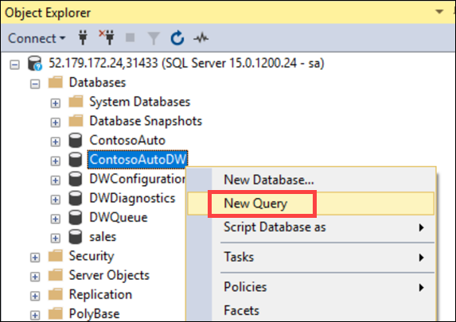ContosoAutoDW is selected and the New Query menu option is highlighted.
The query below selects the top 100 rows from the Customer dimension table, calling a user-defined function (UDF) inline for each row. It uses the DISABLE_TSQL_SCALAR_UDF_INLINING hint to disable the new scalar UDF inlining QP feature. Paste the following query into the the empty query window. Do not execute yet.
Click the Include Actual Execution Plan (Ctrl+M) button in the toolbar above the query window. This will allow us to view the actual (not estimated) query plan after executing the query.
The Actual Query Plan button is highlighted in the toolbar.
Execute the query.
After the query executes, select the Execution plan tab. As the plan shows, SQL Server adopts a simple strategy here: for every tuple in the Customer table, invoke the UDF and output the results (single line from the clustered index scan to compute scalar). This strategy is naïve and inefficient, especially with more complex queries.
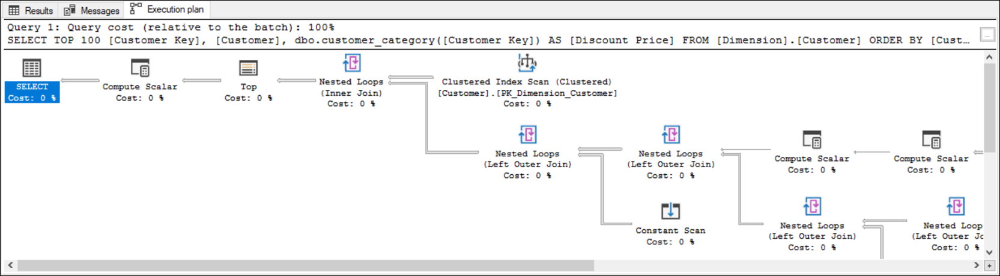This screenshot shows the query execution plan using the legacy method.
Clear the query window, or open a new one, then paste the following query that makes use of the scalar UDF inlining QP feature. If you opened a new query window instead of reusing this one, make sure to click the Include Actual Execution Plan button to enable it. Execute the query.
After the query executes, select the Execution plan tab once again. With scalar UDF inlining, this UDF is transformed into equivalent scalar subqueries, which are substituted in the calling query in place of the UDF.
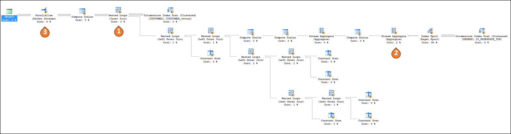This screenshot shows the query execution plan using the new QP feature.
As you can see, the query plan no longer has a user-defined function operator, but its effects are now observable in the plan, like views or inline TVFs. Here are some key observations from the above plan:
A. SQL Server has inferred the implicit join between Dimension.Customer and Fact.OrderHistory and made that explicit via a join operator.
B. SQL Server has also inferred the implicit GROUP BY [Customer Key] on Fact.OrderHistory and has used the IndexSpool + StreamAggregate to implement it.
Depending upon the complexity of the logic in the UDF, the resulting query plan might also get bigger and more complex. As we can see, the operations inside the UDF are now no longer a black box, and hence the query optimizer is able to cost and optimize those operations. Also, since the UDF is no longer in the plan, iterative UDF invocation is replaced by a plan that completely avoids function call overhead.
Either highlight and delete everything in the query window, or open a new query window. Paste the following query that makes use of the table variable deferred compilation feature, since the database compatibility level is set to 150. If you opened a new query window instead of reusing this one, make sure to click the Include Actual Execution Plan button to enable it. Execute the query.
The script above assigns a table variable, @Order, storing the Order Key and Quantity fields from the OrderHistory table to be used in an INNER JOIN further below.
Old method
In prior versions of SQL Server (compatibility level of 140 or lower), the table variable deferred compilation QP feature is not used (more on this below).
There are two plans. The one you want to observe is the second query plan. When we over the second INNER JOIN to view the estimated number of rows and the output list, which shows the join algorithm. The estimated number of rows is around 1. Also, observe the execution time. In our case, it took 11 seconds to complete.
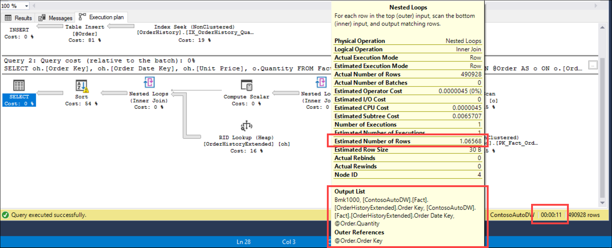This screenshot shows the query execution plan using the legacy method.
New method
After the query executes, select the Execution plan tab once again. Since our database compatibility level is set to 150,notice that the join algorithm is a hash match, and that the overall query execution plan looks different. When you hover over the INNER JOIN, notice that there is a high value for estimated number of rows and that the output list shows the use of hash keys and an optimized join algorithm. Once again, observe the execution time. In our case, it took 5 seconds to complete, which is less than half the time it took to execute without the table variable deferred compilation feature.
This screenshot shows the query execution plan using the new method.
Table variable deferred compilation improves plan quality and overall performance for queries that reference table variables. During optimization and initial compilation, this feature propagates cardinality estimates that are based on actual table variable row counts. This accurate row count information optimizes downstream plan operations. Table variable deferred compilation defers compilation of a statement that references a table variable until the first actual run of the statement. This deferred compilation behavior is the same as that of temporary tables. This change results in the use of actual cardinality instead of the original one-row guess. For more information, see Table variable deferred compilation.
Either highlight and delete everything in the query window, or open a new query window. Paste the following query to simulate out-of-date statistics on the OrderHistory table, followed by a query that executes a hash match. If you opened a new query window instead of reusing this one, make sure to click the Include Actual Execution Plan button to enable it. Execute the query.
After the query executes, select the Execution plan tab. Hover over the Hash Match step of the execution plan. You should see a warning toward the bottom of the Hash Match dialog showing spilled data. Also observe the execution time. In our case, this query took 26 seconds to execute.
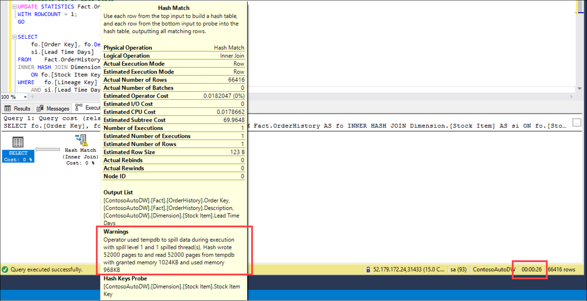The Hash Match dialog shows spilled data warnings.
Either highlight and delete everything in the query window, or open a new query window. Paste the following query to execute the select query that contains the hash match once more. If you opened a new query window instead of reusing this one, make sure to click the Include Actual Execution Plan button to enable it. Execute the query.
After the query executes, select the Execution plan tab. Hover over the Hash Match step of the execution plan. You should no longer see a warning about spilled data. Also observe the execution time. In our case, this query took 4 seconds to execute.
The Hash Match dialog no longer contains spilled data warnings.
So what happened? A query’s post-execution plan in SQL Server includes the minimum required memory needed for execution and the ideal memory grant size to have all rows fit in memory. Performance suffers when memory grant sizes are incorrectly sized. Excessive grants result in wasted memory and reduced concurrency. Insufficient memory grants cause expensive spills to disk. By addressing repeating workloads, batch mode memory grant feedback recalculates the actual memory required for a query and then updates the grant value for the cached plan. When an identical query statement is executed, the query uses the revised memory grant size, reducing excessive memory grants that impact concurrency and fixing underestimated memory grants that cause expensive spills to disk. Row mode memory grant feedback expands on the batch mode memory grant feedback feature by adjusting memory grant sizes for both batch and row mode operators. For more information, see Row mode memory grant feedback.
Task 4: Identify PII and GDPR-related compliance issues using Data Discovery & Classification in SSMS
Contoso Auto has several databases that include tables containing sensitive data, such as personally identifiable information (PII) like phone numbers, social security numbers, financial data, etc. Since some of their personnel and customer data include individuals who reside within the European Union (EU), they need to adhere to the General Data Protection Regulation (GDPR) as well. Because of this, Contoso Auto is required to provide periodic data auditing reports to identify sensitive and GDPR-related data that reside within their various databases.
With SQL Server Management Studio, they are able to identify, classify, and generate reports on sensitive and GDPR-related data by using the SQL Data Discovery & Classification tool. This tool introduces a set of advanced services, forming a new SQL Information Protection paradigm aimed at protecting the data, not just the database:
Discovery & recommendations - The classification engine scans your database and identifies columns containing potentially sensitive data. It then provides you an easy way to review and apply the appropriate classification recommendations, as well as to manually classify columns.
Labeling - Sensitivity classification labels can be persistently tagged on columns.
Visibility - The database classification state can be viewed in a detailed report that can be printed/exported to be used for compliance & auditing purposes, as well as other needs.
In this exercise, you will run the SQL Data Discovery & Classification tool against their customer database, which includes personal, demographic, and sales data.
Open SQL Server Management Studio (SSMS) and connect to your SQL Server 2019 cluster.
Right-click on the sales_YOUR_UNIQUE_IDENTIFIER database, then choose Tasks > Classify Data….
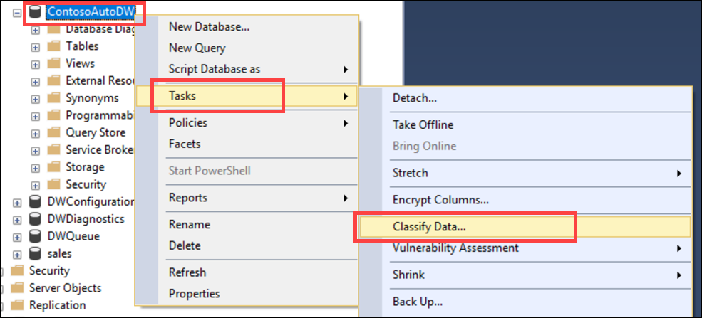The sales database, Tasks menu, and Classify Data items are highlighted.
When the tool runs, it will analyze all of the columns within all of the tables and recommend appropriate data classifications for each. What you should see is the Data Classification dashboard showing no currently classified columns, and a classification recommendations box at the top showing that there are 45 columns that the tool identified as containing sensitive (PII) or GDPR-related data. Click on this classification recommendations box.
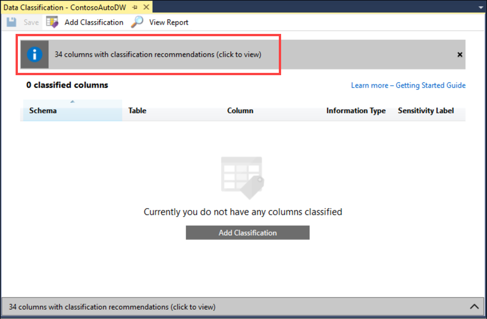The data classification recommendations box is highlighted.
The list of recommendations displays the schema, table, column, type of information, and recommended sensitivity label for each identified column. You can change the information type and sensitivity labels for each if desired. In this case, accept all recommendations by checking the checkbox in the recommendations table header.
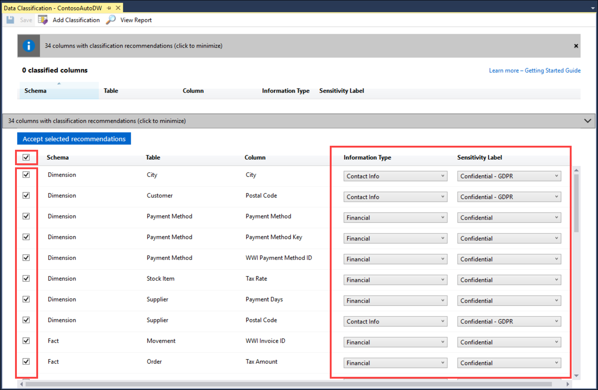The recommendations are shown with each checkbox checked.
Click Accept selected recommendations.
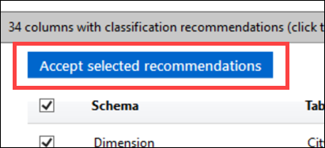The Accept selected recommendations button is highlighted.
Click Save in the toolbar above to apply your changes.
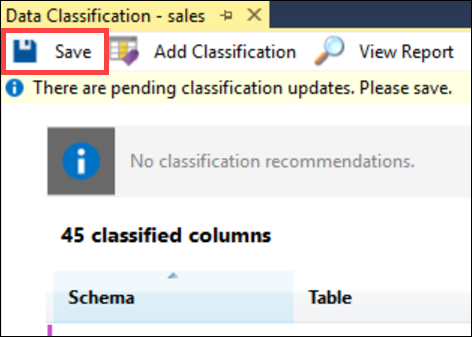The Save button is highlighted.
After the changes are saved, click View Report.
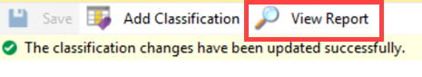The View Report button is highlighted.
What you should see is a report with a full summary of the database classification state. When you right-click on the report, you can see options to print or export the report in different formats.
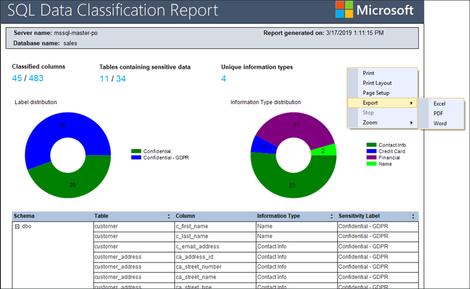The report is displayed, as well as the context menu showing export options after right-clicking on the report.
Task 5: Fix compliance issues with dynamic data masking
Some of the columns identified by the Data Discovery & Classification tool as containing sensitive (PII/GDPR) information include phone numbers, email addresses, billing addresses, and credit card numbers. One way to ensure compliance with various rules and regulations that enforce policies to protect such sensitive data is to prevent those who are not authorized from seeing it. An example would be displaying XXX-XXX-XX95 instead of 123-555-2695 when outputting a phone number within a SQL query result, report, web page, etc. This is commonly called data masking. Traditionally, modifying systems and applications to implement data masking can be challenging. This is especially true when the masking has to apply all the way down to the data source level. Fortunately, SQL Server and its cloud-related product, Azure SQL Database, provides a feature named dynamic data masking (DDD) to automatically protect this sensitive data from non-privileged users.
Dynamic data masking helps prevent unauthorized access to sensitive data by enabling customers to designate how much of the sensitive data to reveal with minimal impact on the application layer. DDM can be configured on the database to hide sensitive data in the result sets of queries over designated database fields, while the data in the database is not changed. Dynamic data masking is easy to use with existing applications, since masking rules are applied in the query results. Many applications can mask sensitive data without modifying existing queries.
In this task, you will apply dynamic data masking to one of the database fields so you can see how to address the reported compliance issues. To test the data mask, you will create a test user and query the field as that user.
Open SQL Server Management Studio (SSMS) and connect to your SQL Server 2019 cluster.
Expand the databases list, right-click on sales_YOUR_UNIQUE_IDENTIFIER, then select New Query.
The sales database and New Query menu item are highlighted.
Add a dynamic data mask to the existing dbo.customer.c_last_name field by pasting the below query into the new query window:
The partial custom string masking method above exposes the first two characters and adds a custom padding string after for the remaining characters. The parameters are: prefix,[padding],suffix
Execute the query by clicking the Execute button above the query window, or enter F5.
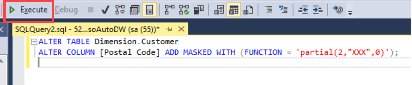The dynamic data mask query is shown and the Execute button is highlighted above.
Clear the query window and replace the previous query with the following to add a dynamic data mask to the dbo.customer.c_email_address field:
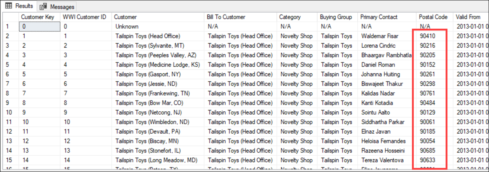The query results are shown with no mask applied to the Postal Code field.
Notice that the full last name and email address values are visible. That is because the user you are logged in as a privileged user. Let’s create a new user and execute the query again:
Execute the query by clicking the Execute button. Notice this time that the Postal Code values are masked (90XXX).
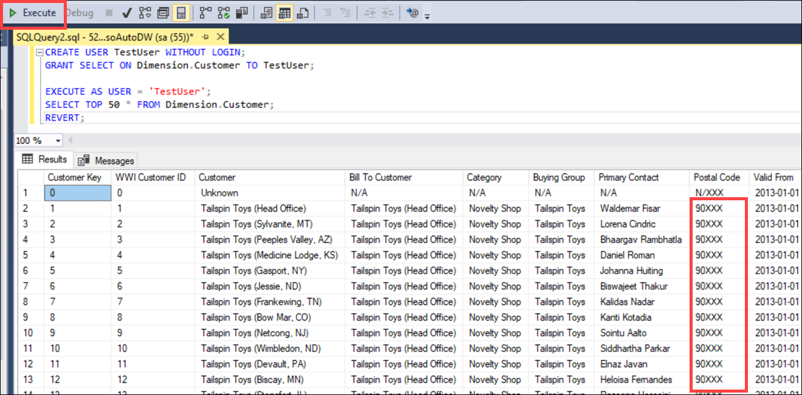The query results are shown with the mask applied to the Postal Code field.
Wrap-up
Thank you for participating in the SQL Server 2019 Big Data Clusters experience! We hope you are excited about the new capabilities, and will refer back to this experience to learn more about these features.
To recap, you experienced:
How to minimize or remove the need for ETL through data virtualization with relational data sources and CSV files, by being able to query against these alongside internal SQL 2019 tables with no data movement required.
Training a machine learning model by running a Jupyter notebook on the Big Data cluster, then scoring data with the trained model and saving it as an external table for easy access.
Running different queries to see how the intelligent query processing (QP) features optimize and improve the performance of your queries for you.